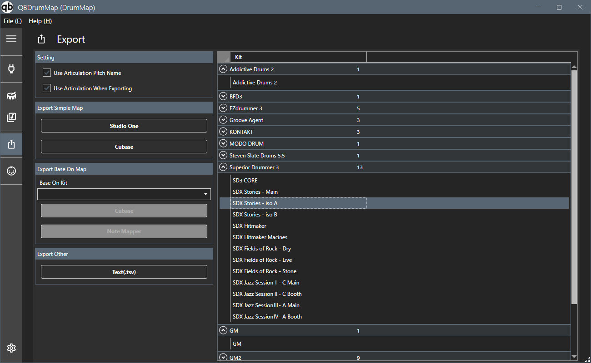

Exporte la Drum Map.

Sélectionnez la cible d'exportation dans la liste des kits sur le côté droit de l'écran (plusieurs sélections possibles), Appuyez sur le bouton d'exportation souhaité. Sélectionnez l'emplacement de stockage dans la boîte de dialogue de sélection de dossier qui apparaît. Le dossier sélectionné est enregistré dans le fichier de paramètres et devient le dossier de sélection par défaut lors de la prochaine exportation.
Utiliser le nom de la hauteur d'articulation est coché, le nom de l'articulation sera utilisé préférentiellement pour le nom de la hauteur.
Lors de l’exportation d’une Drum Map normale, vous pouvez spécifier si vous souhaitez ou non utiliser l’articulation dans Utiliser l’articulation lors de l’exportation. Si vous choisissez de ne pas utiliser l'articulation
, le contenu affiché dans la liste de hauteurs sera affiché tel quel. Si vous sélectionnez Utiliser l'articulation
, l'ordre de tri sera déterminé par l'articulation liée plutôt que par le contenu affiché de la liste de hauteurs.
Les informations sur la partition de batterie et la palette de couleurs ne seront affichées que si vous sélectionnez Utiliser l'articulation. (Il n'y a aucune information sur les schémas de couleurs pour Cubase)
Le nom de fichier sera le nom du kit.Extension. Si un fichier portant le même nom existe déjà, il sera écrasé et remplacé. La liste de pitch
pour Studio One, la drum map pour Cubase et le texte tsv sont affichés dans le dossier du nom du plug-in.
Les fichiers pouvant être exportés sont les suivants.
Lors de l'exportation d'une drum map mappée, sélectionnez la drum map (kit) à utiliser la source.